deep-learning-for-computer-vision-with-python-starter
Table of Contents
- 1. Introductions
- 2. Image Fundamentals
- 3. Image Classification Basics
- 4. Datasets for Image Classification
- 5. Configuring Your Development Environment
- 6. Your First Image Classifier
- 7. Parameterized Learning
- 8. Gradient Descent
- 9. Neural Network Fundamentals
- 10. Convolutional Neural Networks
- 11. Training Your First CNN
- 12. Saving and Loading Your Models
- 13. LeNet: Recoginizing Handwritten Digits
- 14. MiniVGGNet: Going Deeper with CNNs
- 15. Learning Rate Schedulers
- 16. Spotting Underfitting and Overfitting
- 17. Case Study: Breaking Captchas with a CNN
- 18. Checkpointing Models
- 19. Visualizing Network Architectures
- 20. Out-of-the-box CNNs for Classification
1 Introductions
Until you take your theoretical knowledge and implement it, you haven’t actually learned anything yet.
Reading about red-black trees and then actually implementing them from scratch requires two different skill sets.
If you take anything from my personal experience, it should be this: 1. You don’t need a decade of theory to get started in deep learning. 2. You don’t need pages and pages of equations. 3. And you certainly don’t need a degree in computer science (although it can be helpful).
Theoretical knowledge is not enough – we need to be practitioners in our respective fields as well. The most important step you can take right now is to simply get started.
Python is the best way to work with deep learning algorithms.
TensorFlow and Theano are libraries for defining abstract, general-purpose computation graphs.
Keras is a deep learning framework. Under the hood, Keras uses either the TensorFlow or Theano computational backend, allowing it to take advantage of these powerful computation engines.
The mxnet package provides bindings to the Python programming language and specializes in distributed, multi-machine learning – the ability to parallelize training across GPUs/devices/nodes is critical when training deep neural network architectures on massive datasets (such as ImageNet).
Remember, deep learning is only one facet of computer vision – there are a number of computer vision techniques you should study to round out your knowledge.
A way to turn knowledge into your knowledge: Use existing deep learning libraries to build our own custom Python-based toolset.
2 Image Fundamentals
2.1 Pixels: The Building Blocks of Images
A pixel is considered the "color" or the "intensity" of light that appears in a given place in our images.
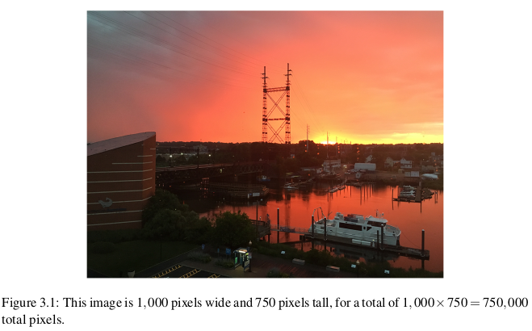
Most pixels are represented in two ways:
- Grayscale/single channel
- Color
In a grayscale image, each pixel is a scalar value between 0 and 255, where zero corresponds to “black” and 255 being “white”.
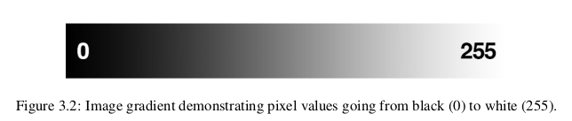
Color pixels are normally represented in the RGB color space. Pixels in the RGB color space are represented by a list of three values: one value for the Red component, one for Green, and another for Blue. Each Red, Green, and Blue channel can have values defined in the range [0, 255] for a total of 256 “shades”, where 0 indicates no representation and 255 demonstrates full representation.
We’ll often preprocess our image by performing mean subtraction or scaling, which will require us to convert the image to a floating point data type.
The RGB color space is an example of an additive color space: the more of each color is added, the brighter the pixel becomes and closer to white.
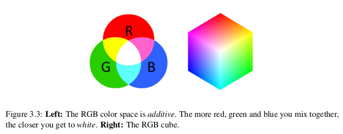
The primary drawbacks of the RGB color space include:
- Its additive nature makes it a bit unintuitive for humans to easily define shades of color.
- It doesn’t mimic how humans perceive color.
We can conceptualize an RGB image as consisting of three independent matrices of width W and height H, one for each of the RGB components, as shown in Figure 3.5. We can combine these three matrices to obtain a multi-dimensional array with shape W × H × D where D is the depth or number of channels (for the RGB color space, D=3):
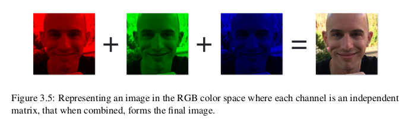
2.2 The Image Coordinate System
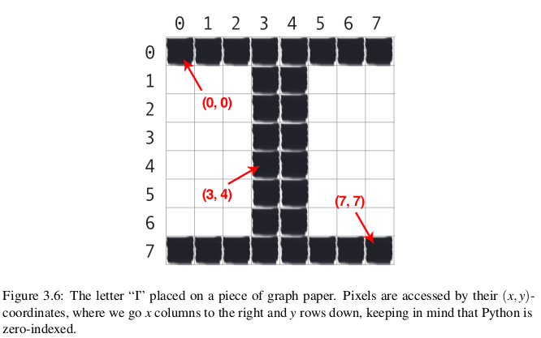
Image processing libraries such as OpenCV and scikit-image represent RGB images as multidimensional NumPy arrays with shape (height, width, depth).
Why does the height come before the width when we normally think of an image in terms of width first then height? The answer is due to matrix notation. When defining the dimensions of matrix, we always write it as rows x columns. The number of rows in an image is its height whereas the number of columns is the image’s width. The depth will still remain the depth.
It’s important to note that OpenCV stores RGB channels in reverse order. Why does OpenCV do this? The answer is simply historical reasons. Early developers of the OpenCV library chose the BGR color format because the BGR ordering was popular among camera manufacturers and other software developers at the time.
2.3 Scaling and Aspect Ratios
Scaling, or simply resizing, is the process of increasing or decreasing the size of an image in terms of width and height. When resizing an image, it’s important to keep in mind the aspect ratio. Ignoring the aspect ratio can lead to images that look compressed and distorted.
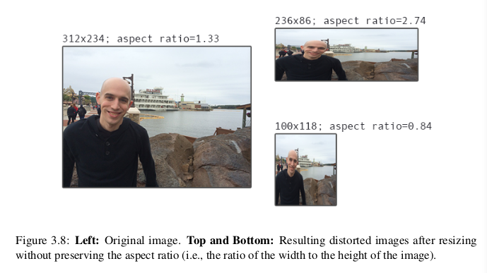
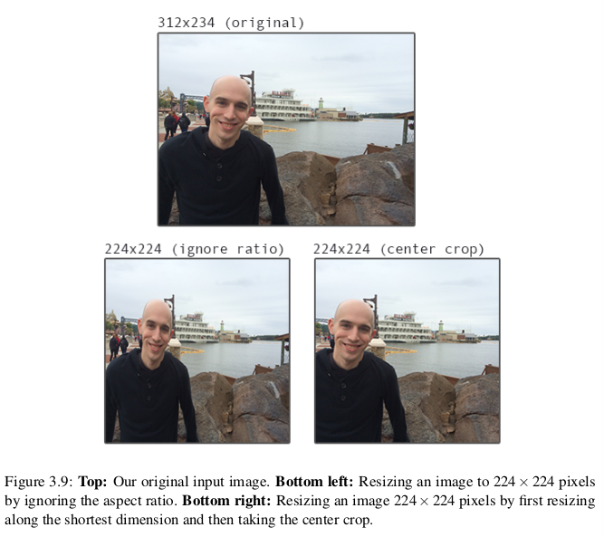
3 Image Classification Basics
3.1 What Is Image Classification?
Image classification, at its very core, is the task of assigning a label to an image from a predefined set of categories.
3.1.1 The Semantic Gap
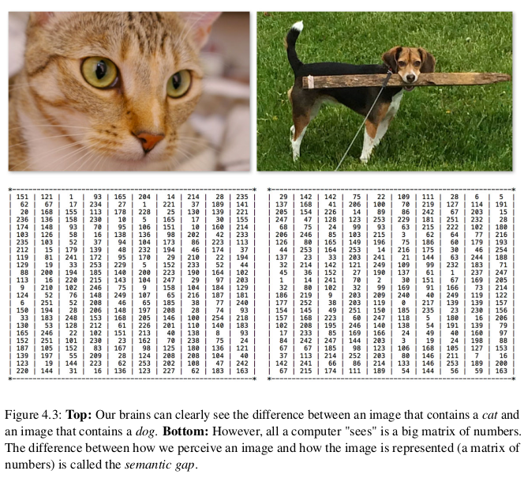
Given that all a computer sees is a big matrix of pixels, we arrive at the problem of the semantic gap.The semantic gap is the difference between how a human perceives the contents of an image versus how an image can be represented in a way a computer can understand the process.
Computers has no semantic understanding of images.
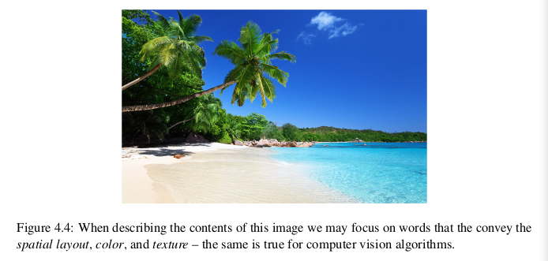
We might describe the image as follows:
- Spatial: The sky is at the top of the image and the sand/ocean are at the bottom.
- Color: The sky is dark blue, the ocean water is a lighter blue than the sky, while the sand is tan.
- Texture: The sky has a relatively uniform pattern, while the sand is very coarse.
How do we go about encoding all this information in a way that a computer can understand it?
The answer is to apply feature extraction to quantify the contents of an image. Feature extraction is the process of taking an input image, applying an algorithm, and obtaining a feature vector that quantifies our image. (One pixel is useless, It is the combination that has meaning.)
Feature extraction method:
- hand-engineered
- automatically learned
3.1.2 Challenges
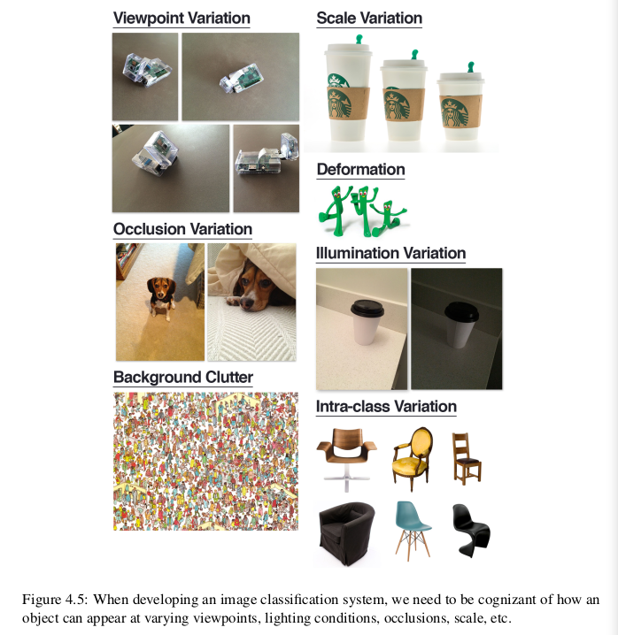
factors of variations:
- viewpoint variation
- scale variation
- deformation
- occlutions
- illumination
- background clutter
- intra-class variation
So how do we account for such an incredible number of variations in objects/images?
In general, we try to frame the problem as best we can. We make assumptions regarding the contents of our images and to which variations we want to be tolerant. We also consider the scope of our project – what is the end goal? And what are we trying to build?
Successful computer vision, image classification, and deep learning systems deployed to the real-world make careful assumptions and considerations before a single line of code is ever written.
The key takeaway is to always consider the scope of your image classifier.
ImageNet, the de facto standard benchmark dataset for image classification algorithms, consists of 1,000 objects that we encounter in our everyday lives.
3.2 Types of Learning
- supervised learning
- unsupervised learning
- semi-supervised learning
3.3 The Deep Laerning Classification Pipeline
# rule-based system def fib(n): if n == 0: return 0 elif n == 1: return 1 else: return fib(n - 1) + fib(n - 2) print(fib(7)) print(fib(13)) print(fib(35))
Rule-based system:
- Accepts an input, returns an output.
- The process is well defined.
- The output is easily verifiable for correctness.
- Lends itself well to code coverage and test suites.
Learning system:
- Gather Your Dataset (Notice the class imbalance)
- Split Your Dataset (traning set, testing set, and validation set; traning set and testing set)
- Train Your Network
- Evaluate
We normally allocate roughly 10-20% of the training data for validation.
The test set is only used in evaluating the performance of your network.
4 Datasets for Image Classification
4.1 MNIST
MNIST: Modified National Institute of Standards and Technology
NIST: National Institute of Standards and Technology
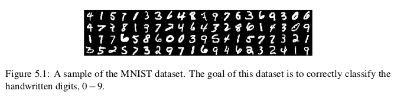
MNIST itself consists of 60,000 training images and 10,000 testing images. Each feature vector is 784-dim, corresponding to the 28 × 28 grayscale pixel intensities of the image. These grayscale pixel intensities are unsigned integers, falling into the range [0, 255].
4.2 CIFAR-10
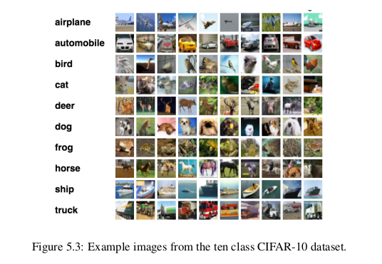
CIFAR-10 consists of 60,000 32 × 32 × 3 (RGB) images. As the name suggests, CIFAR-10 consists of 10 classes, including: airplanes, automobiles, birds, cats, deer, dogs, frogs, horses, ships, and trucks.
4.3 SMILES
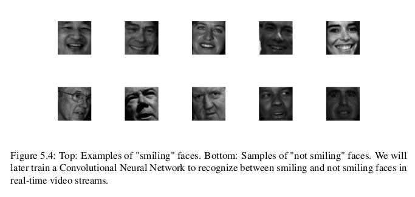
The SMILES dataset consists of images of faces that are either smiling or not smiling. In total, there are 13,165 grayscale images in the dataset, with each image having a size of 64 × 64.
Decoupling computer vision preprocessing from machine learning (especially for benchmark datasets) is a common trend.
4.4 Flower-17
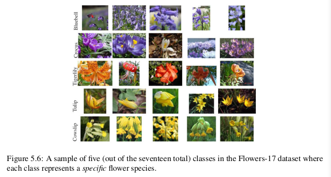
The Flowers-17 dataset is a 17 category dataset with 80 images per class.
4.5 CALTECH-101
The CALTECH-101 dataset is a popular benchmark dataset for object detection. The dataset of 8,677 images includes 101 categories spanning a diverse range of objects. The CALTECH-101 dataset exhibits heavy class imbalances (meaning that there are more example images for some categories than others).
4.6 Adience
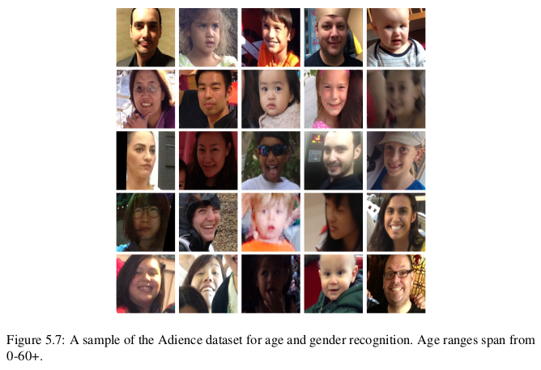
The Adience dataset is used to facilitate the study of age and gender recognition. A total of 26,580 images are included in the dataset with ages ranging from 0-60. The goal of this dataset is to correctly predict both the age and gender of the subject in the image.
4.7 ImangeNet
ImageNet is actually a project aimed at labeling and categorizing images into almost 22,000 categories based on a defined set of words and phrases (WordNet).
In the context of computer vision and deep learning, whenever you hear people talking about ImageNet, they are very likely referring to the ImageNet Large Scale Visual Recognition Challenge or simply ILSVRC for short
The goal of the image classification track in this challenge is to train a model that can classify an image into 1,000 separate categories using approximately 1.2 million images for training, 50,000 for validation, and 100,000 for testing.
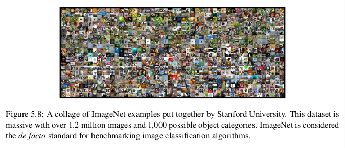
4.8 Kaggle: Facial Expression Recognition Challenge
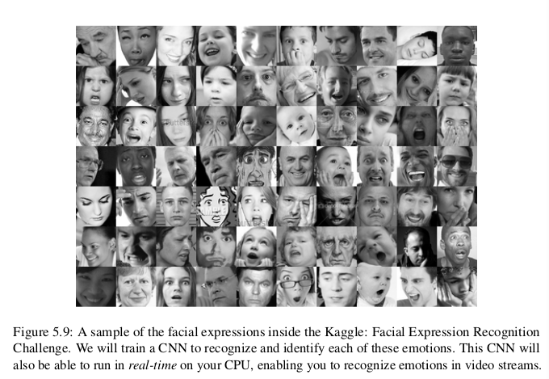
The goal of the Facial Expression Recognition Challenge (FER) is to correctly identify the emotion. A total of 35,888 images are provided in the FER challenge with the goal to label a given facial expression into seven different categories:
- Angry
- Disgust (sometimes grouped in with “Fear” due to class imbalance)
- Fear
- Happy
- Sad
- Surprise
- Neutral
4.9 Indoor CVPR
The Indoor Scene Recognition dataset consists of a number of indoor scenes, including stores, houses, leisure spaces, working areas, and public spaces. The goal of this dataset is to correctly train a model that can recognize each of the areas.
4.10 Stanford Cars
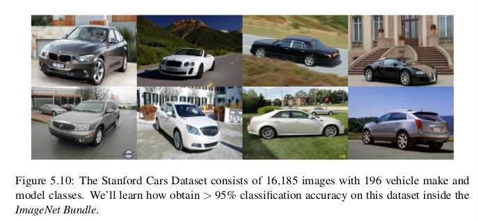
the Cars Dataset consists of 16,185 images of 196 classes of cars.
4.11 COCO
Mocrosoft Common Ojbects in Context
http://cocodataset.org
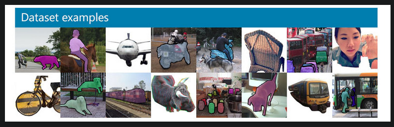
COCO is a large-scale object detection, segmentation, and captioning dataset. COCO has several features:
- Object segmentation
- Recognition in context
- Superpixel stuff segmentation
- 330K images (>200K labeled)
- 1.5 million object instances
- 80 object categories
- 91 stuff categories
- 5 captions per image
- 250,000 people with keypoints
5 Configuring Your Development Environment
When it comes to learning a new technology (especially deep learning), configuring your development environment tends to be half the battle. Between different operating systems, varying dependency versions, and the actual libraries themselves, configuring your own deep learning development environment can be quite the headache.
These issues are all further compounded by the speed in which deep learning libraries are updated and released – new features push innovation, but also break previous versions.
Depending on the timeframe, your environment may be obsolete!
5.1 Libraries and Packages
- Python (language)
- Keras (framework)
- Mxnet (distributed)
- Opencv (image processing)
- scikit-image (image processing)
- scikit-learn (split, accuracy)
Please keep in mind that if you plan on doing any serious deep learning research or development, consider using a Linux environment such as Ubuntu.While deep learning work can absolutely be done on Windows (not recommended) or macOS (totally acceptable if you are just getting started), nearly all production-level environments for deep learning leverage Linux-based operating systems – keep this fact in mind when you are configuring your own deep learning development environment.
6 Your First Image Classifier
6.1 Working with Image Dataset
When working with image datasets, we first must consider the total size of the dataset in terms of bytes. Is our dataset large enough to fit into the available RAM on our machine? Can we load the dataset as if loading a large matrix or array? Or is the dataset so large that it exceeds our machine’s memory, requiring us to “chunk” the dataset into segments and only load parts at a time?
You should always be cognizant of your dataset size before even starting to work with image classification algorithms. Taking the time to organize, preprocess, and load your dataset is a critical aspect of building an image classifier.
6.2 k-NN: A Simple Classifier
While simple and intuitive, the k-NN algorithm has a number of drawbacks.
- It doesn’t actually "learn" anything.
- Without specialized data structures, the k-NN algorithm scales linearly with the number of data points
7 Parameterized Learning
Parameterized learning:
A learning model that summarizes data with a set of parameters of fixed size (independent of the number of traning examples) is called a parametric model. No matter how much data you throw at the parametric model, it won't change its mind about how many parameters it needs.
Parameterized learning is the cornerstone of modern machine learning and deep learning algorithms.
7.1 An Introduction to Linear Classification
Parameterization is the process of defining the necessary parameters of a given model.
7.1.1 Four part of machine learning:
- data
- model
- loss function
- optimization
7.1.2 Advantages of Parameterized Learning and Linear Classification
- Once we are done training our model, we can discard the input data and keep only the weight matrix W and the bias vector b.
- Classifying new test data is fast.
8 Gradient Descent
We call sigmoid activation function becuase the function will "activate" and fire "ON" (output value > 0.5) or "OFF" (output value <= 0.5) based on the input.
9 Neural Network Fundamentals
9.1 Introduction to Neural Networks
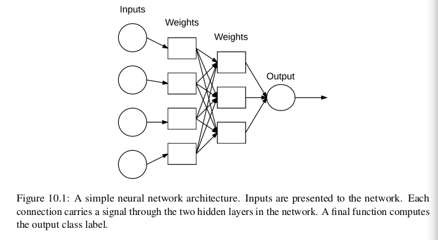
Each node performs a simple computation. Each connection then carries a signal (i.e., the output of the computation) from one node to another, labeled by a weight indicating the extent to which the signal is amplified or diminished.
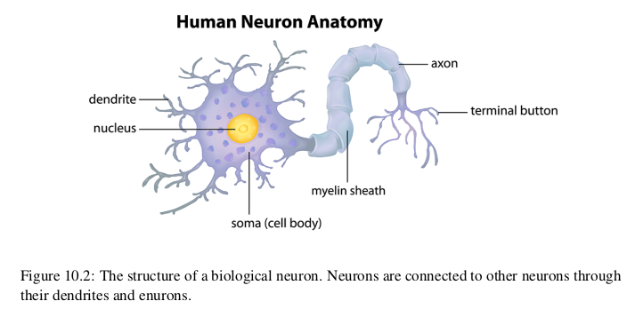
Our brains are composed of approximately 10 billion neurons, each connected to about 10,000 other neurons. The cell body of the neuron is called the soma, where the inputs (dendrites) and outputs (axons) connect soma to other soma.
Each neuron receives electrochemical inputs from other neurons at their dendrites. If these electrical inputs are sufficiently powerful to activate the neuron, then the activated neuron transmits the signal along its axon, passing it along to the dendrites of other neurons.
A neuron firing is a binary operation – the neuron either fires or it doesn’t fire. There are no different “grades” of firing. However, keep in mind that ANNs are simply inspired by what we know about the brain and how it works. The goal of deep learning is not to mimic how our brains function.
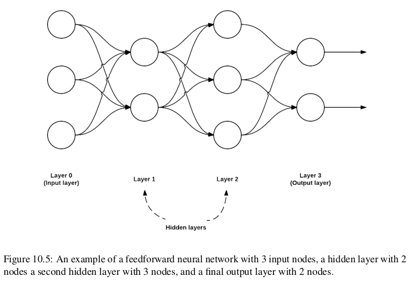
In this type of architecture, a connection between nodes is only allowed from nodes in layer i to nodes in layer i + 1 (hence the term, feedforward). There are no backward or inter-layer connections allowed.
Neural Learning
Neural learning refers to the method of modifying the weights and connections between nodes in a network.
Biologically, we define learning in terms of Hebb’s principle:
"When an axon of cell A is near enough to excite cell B, and repeatedly or
persistently takes place in firing it, some growth process or metabolic change takes
place in one or both cells such that A’s efficiency, as one of the cells firing B, is
increased" – Donald Hebb
In terms of ANNs, this principle implies that there should be an increase in strength of connections between nodes that have similar outputs when presented with the same input. We call this correlation learning because the strength of the connections between neurons eventually represents the correlation between outputs.
9.2 The Perceptron Algorithm
The Perceptron is a very important algorithm to understand as it sets the stage for more advanced multi-layer networks.
9.2.1 AND, OR and XOR Datasets
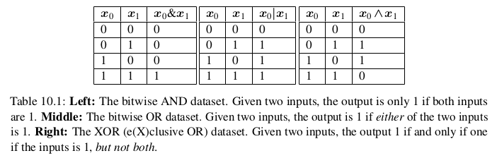
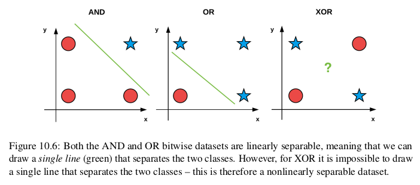
9.2.2 Perceptron Architecture
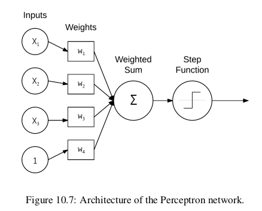
In the case of bitwise, the input is two, so there are only x1, and x2.
9.2.3 Perceptron Training Procedure and the Delta Rule
9.2.4 Implementation with Python
9.2.5 Evaluating the Perceptron Bitwise Datasets
9.3 Backpropagation and Multi-layer Network
Backpropagation is an important algorithm – without (efficient) backpropagation, it would be impossible to train deep learning networks to the depths that we see today. Backpropagation can be considered the cornerstone of modern neural networks and deep learning.
The backpropagation algorithm consists of two phases:
- forward pass (propagate input throught network to output)
- backward pass (compute the gradient and update weights)
Example: XOR
The Forward Pass
XOR dataset:
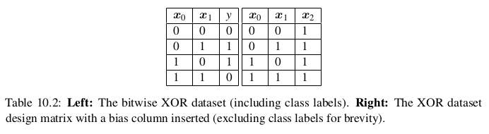
XOR network:
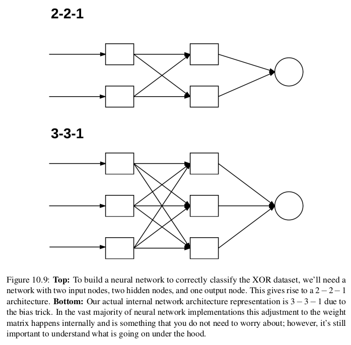
Network initialized:
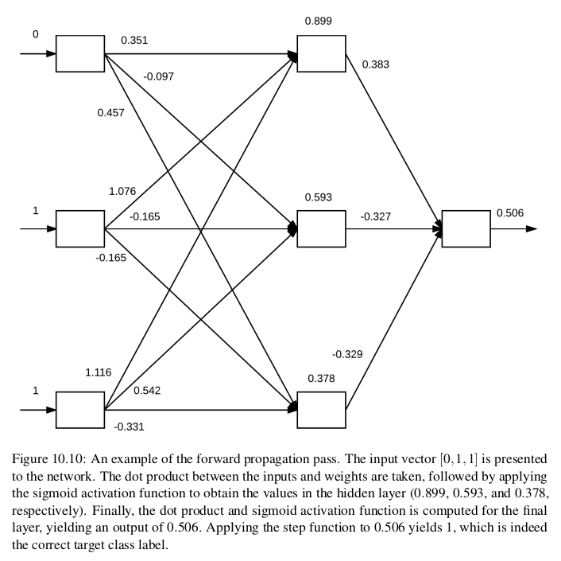
The backward Pass
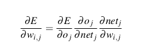
9.4 The Four Ingredients in a Neural Network Recipe
- dataset
- model
- how many data points
- the number of classes
- how similar/dissimilar the classes are
- the intr-class variance
- how many data points
- loss function
- optimization method
When training deep learning networks, especially when you’re first getting started and learning the ropes, SGD should be your optimizer of choice. You then need to set a proper learning rate and regularization strength, the total number of epochs the network should be trained for, and whether or not momentum (and if so, which value) or Nesterov acceleration should be used. Take the time to experiment with SGD as much as you possibly can and become comfortable with tuning the parameters.
Becoming familiar with a given optimization algorithm is similar to mastering how to drive a car – you drive your own car better than other people’s cars because you’ve spent so much time driving it; you understand your car and its intricacies. Often times, a given optimizer is chosen to train a network on a dataset not because the optimizer itself is better, but because the driver (i.e., deep learning practitioner) is more familiar with the optimizer and understands the "art" behind tuning its respective parameters.
Keep in mind that obtaining a reasonably performing neural network on even a small/medium dataset can take 10’s to 100’s of experiments even for advanced deep learning users – don’t be discouraged when your network isn’t performing extremely well right out of the gate. Becoming proficient in deep learning will require an investment of your time and many experiments – but it will be worth it once you master how these ingredients come together.
9.5 Weight initialization
9.5.1 Constant Initialization
W =np.zeros((64,32)) W =np.ones((64,32)) W =np.zeros((64,32)) * C
It is rarely used as a neural network weight initializer.
9.5.2 Uniform and Normal Distributions
W = np.random.uniform(low=-0.05, high=.05, size=(64,32)) W = np.random.normal(0.0, 0.5, size=(64,32))
9.5.3 LeCun Uniform and Normal
The default weight initialization method is called "Efficient Backprop" in PyTorch framworks.
F_in: fan in or the number of inputs to the layer
F_out: fan out or the number of outputs to the layer
F_in = 64 F_out = 32 limit = np.sqrt(3 / float(F_in)) W = np.random.uniform(low=-limit, high=limit, size=(F_in, F_out)) F_in = 64 F_out = 32 limit = np.sqrt(1 / float(F_in)) W = np.random.normal(0.0, limit, size=(F_in, F_out))
9.5.4 Glorot Uniform and Normal
The default weight initialization method used in the Keras library is called "Glorot initialization".
F_in = 64 F_out = 32 limit = np.sqrt(2 / float(F_in + F_out)) W = np.random.normal(0.0, limit, size=(F_in, F_out)) F_in = 64 F_out = 32 limit = np.sqrt(6 / float(F_in + F_out)) W = np.random.uniform(low=-limit, high=limit, size=(F_in, F_out))
9.5.5 He et al./Kaiming/MSRA Uniform and Normal
This technique is named after Kaiming He, the first author of the paper, "Delving Deep into Rectifiers: Surpassing Human-Level Performance on ImageNet Classification".
We typically used this method when we are training very deep neural networks that use a ReLU-like activation function (in particular, a “PReLU”)
F_in = 64 F_out = 32 limit = np.sqrt(6 / float(F_in)) W = np.random.uniform(low=-limit, high=limit, size=(F_in, F_out)) limit = np.sqrt(2 / float(F_in)) W = np.random.normal(0.0, limit, size=(F_in, F_out))
9.5.6 Differences in Initialization Implementation
The actual limit values may vary for LeCun Uniform/Normal, Xavier Uniform/Normal, and He et al. Uniform/Normal. For example, when using Xavier Uniform in Caffe, limit = -np.sqrt(3 / F_in); however, the default Xaiver initialization for Keras uses np.sqrt(6 / (F_in + F_out)). No method is " correct" than the other, but you should read the documentation of your respective deep learning library.
10 Convolutional Neural Networks
Each layer in a CNN applies a different set of filters, and combines the results, feeding the output into the next layer in the network. During training, a CNN automatically learns the values for these filters.
10.1 Understanding Convolutions
It’s normal to hand-define kernels to obtain various image processing functions. In fact, you might already be familiar with blurring (average smoothing, Gaussian smoothing, median smoothing, etc.), edge detection (Laplacian, Sobel, Scharr, Prewitt, etc.), and sharpening – all of these operations are forms of hand-defined kernels that are specifically designed to perform a particular function.
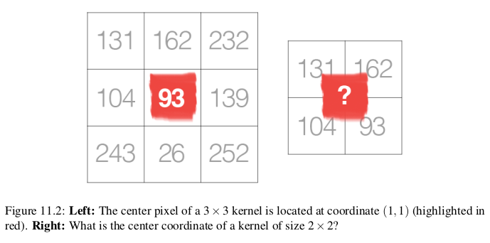
Kernels can be of arbitrary rectangular size MxN, provided that both M and N are odd integers.
We use an odd kernel size to ensure there is a valid integer (x, y)-coordinate at the center of the image (Figure 11.2). On the left, we have a 3 × 3 matrix. The center of the matrix is located at x = 1, y = 1 where the top-left corner of the matrix is used as the origin and our coordinates are zero-indexed. But on the right, we have a 2 × 2 matrix. The center of this matrix would be located at x = 0.5, y = 0.5. But as we know, without applying interpolation, there is no such thing as pixel location (0.5, 0.5) – our pixel coordinates must be integers! This reasoning is exactly why we use odd kernel sizes: to always ensure there is a valid (x, y)-coordinate at the center of the kernel.
10.2 CNN Building Blocks
Layer Types:
- convolution(CONV)
- activation
- pooling
- full-connected(FC)
- batch normalization(BN)
- dropout(DO)
The CONV and FC layers (and BN) are the only layers of the network that actually learn parameters – the other layers are simply responsible for performing a given operation.
10.3 Common Architectures and Training Patterns
By far, the most common form of CNN architecture is to stack a few CONV and RELU layers, following them with a POOL operation. We repeat this sequence until the volume width and height is small, at which point we apply one or more FC layers. Therefore, we can derive the most common CNN architecture using the following pattern:
INPUT => [[CONV => RELU]*N => POOL?]*M => [FC => RELU]*K => FC Here the * operator implies one or more and the ? indicates an optional operation. Common choices for each reputation include: • 0 <= N <= 3 • M >= 0 • 0 <= K <= 2
There are more "exotic" network architectures that deviate from these patterns and, in turn, have created patterns of their own. For example, some architectures remove the POOL operation entirely, relying on CONV layers to downsample the volume – then, at the end of the network, average pooling is applied rather than FC layers to obtain the input to the softmax classifiers.
Rules of Thumb:
- the images presented to the input layer should be square. (common input layer size include 32 x 32, 64 × 64, 96 × 96, 224 × 224)
- the input layer should also be divisible by two multiple times after the first CONV operation is applied.
- use small filter size such as 3 x 3 and 5 x 5.
- commonly stride = 1 for small spatial input and stride >= 2 for large input volumes
- for max pooling, it is highly uncommon to see receptive fields larger then three since thes operations are very destructive.
- use batch normalization after having a baseline.
10.4 Are CNNs Invariant to Translation, Rotation, and Scaling?
Individual filters are not invariant to changes in how an image is rotated. However, a CNN as a whole can learn filters that fire when a pattern is presented at a paricular orientation. The same is to scaling.
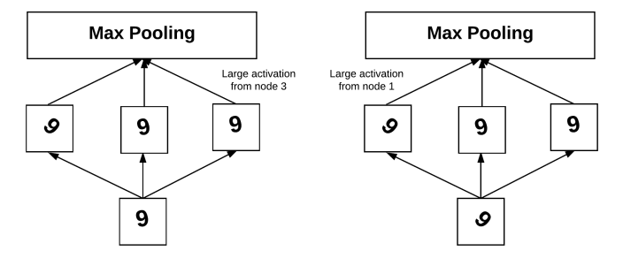
Translation invariance is something that a CNN excels at. A filter slides from left-to-right and top-to-bottom across an input, and will activate when it comes across a particular edge-like region, corner, or color blob. During the pooling operation, this large response is found and thus "beats" all its neighbors by having a larger activation. Therefore, CNNs can be seen as "not caring" exactly where an activation fires, simply that it does fire – and, in this way, we naturally handle translation inside a CNN.
11 Training Your First CNN
11.1 Keras Configuration
The first time you import the Keras library, behind the scenes Keras generates a keras.json file in your home directory.
12 Saving and Loading Your Models
The Process of saving and loading a trained model is called model serializaiton. (serialization is necessary from memory to disk)
from keras.models import load_model model.save(<path>) model = load_model(<path>)
13 LeNet: Recoginizing Handwritten Digits
The LeNet architecture is first introduced by LeCun et al. in their 1998 paper, Gradient-Based Learning Applied to Document Recognition. As the name of the paper suggests, the authors’ motivation behind implementing LeNet was primarily for Optical Character Recognition (OCR).
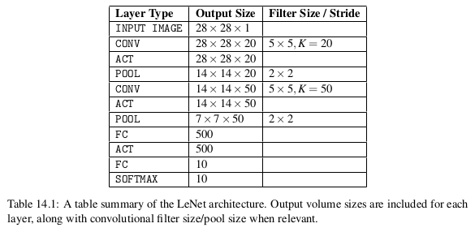
In many ways, LeNet + MNIST is the "Hello, World" equivalent of deep learning applied to image classification.
Pattern:
INPUT -> CONV -> TANH -> POOL -> CONV -> TANH -> POOL -> FC -> TANH -> FC
Back in 1998 the ReLU had not been used in the context of deep learning — it was more common to use tanh or sigmoid as an activation function. When implementing LeNet today, it’s common to swap out TANH for RELU.
14 MiniVGGNet: Going Deeper with CNNs
VGGNet, (sometimes referred to as simply VGG), was first introduced by Simonyan and Zisserman in their 2014 paper, Very Deep Learning Convolutional Neural Networks for Large-Scale Image Recognition. The primary contribution of their work was demonstrating that an architecture with very small (3 × 3) filters can be trained to increasingly higher depths (16-19 layers) and obtain state-of-the-art classification on the challenging ImageNet classification challenge.
Previously, network architectures in the deep learning literature used a mix of filter sizes:
The first layer of the CNN usually includes filter sizes somewhere between 7 × 7 and 11 × 11. From there, filter sizes progressively reduced to 5 × 5. Finally, only the deepest layers of the network used 3 × 3 filters.
Any time you see a network architecture that consists entirely of 3 × 3 filters, you can rest assured that it was inspired by VGGNet.
14.1 The VGG Family of Networks
The VGG family of Convolutional Neural Networks can be characterized by two key components:
- All CONV layers using only 3 x 3 filters.
- Stacking muliple CONV -> RELU layers sets before applying a POOL operation.
In VGGNet, we stack multiple CONV => RELU layers prior to applying a single POOL layer. Doing this allows the network to learn more rich features from the CONV layers prior to downsampling the spatial input size via the POOL operation.
14.2 The MiniVGGNet Architecture
CONV -> RELU -> CONV -> RELU -> POOL -> FC -> RELU -> FC -> SOFTMAX
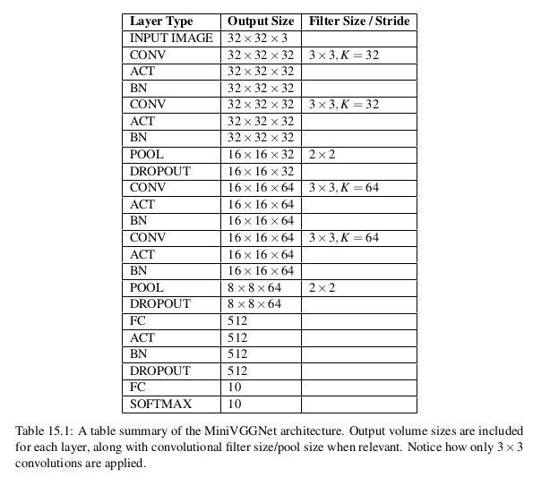
14.3 Batch Normalization
- Batch normalization can lead to faster, more stable convergence with higher accuracy.
- However, the advantages will come at the expense of training time.
14.4 Cost
The cost time is 1 hour. One epoch time is 90s.
(16G, ThinkCenter, i7)
| Parameter | Value |
|---|---|
| width | 32 |
| height | 32 |
| epoch | 40 |
| learning rate | 0.01 |
| decay | 0.01/40 |
| mementum | 0.9 |
| batch size | 30 |
| nesterov | True |
15 Learning Rate Schedulers
By adjusting our learning rate on an epoch-to-epoch basis, we can reduce loss, increase accuracy, and even in certain situations reduce the total amount of time it takes to train a network.
The most simple and heavily learning rate schedulers are ones that progressively reduce learning rate over time.
There are two primary types of learning rate schedulers:
- Learning rate schedulers that decrease gradually based on the epoch number.
- Learning rate schedulers that drop based on specific epoch.
15.1 The Standard Decay Schedule in Keras
opt = SGD(lr=0.01, decay=0.01 / 40, momentum=0.9, nesterov=True)
@interfaces.legacy_get_updates_support def get_updates(self, loss, params): grads = self.get_gradients(loss, params) self.updates = [K.update_add(self.iterations, 1)] lr = self.lr if self.initial_decay > 0: lr *= (1. / (1. + self.decay * K.cast(self.iterations, K.dtype(self.decay))))
where \(\alpha\) for learning rate, \(e\) for epoch, \(d\) for decay.
By using learning rate decay we can often not only improve our classification accuracy but also lessen the affects of overfitting, thereby increasing the ability of our model to generalize.
15.2 Step-based Decay
Another popular learning rate scheduler is step-based decay where we systematically drop the learning rate after specific epochs during training.
When applying step decay to our learning rate, we have two options:
- Define an equation that models the piecewise drop in learning rate we wish to achieve.
- ctrl + c method: we train for some number of epochs at a given learning rate, eventually notice validation performance has stalled, then ctrl + c to stop the script, adjust our learning rate, and continue training.
The ctrl + c method is more advanced and is normally applied to larger datasets using deeper neural networks where the exact number of epochs required to obtain reasonable accuracy is unknown.
When applying step decay, we often drop our learning rate by either (1) half or (2) an order of magnitude after every fixed number of epochs.
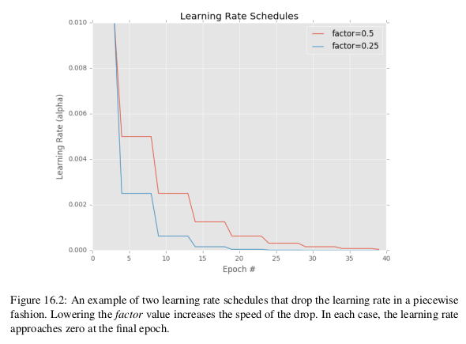
15.3 Summary
Exactly which learning rate scheduler you should use is part of the experimentation process. Typically your first experiment would not use any type of decay or learning rate scheduling so you can obtain a baseline accuracy and loss/accuracy curve.
From there you might introduce the standard time-based schedule provided by Keras (with the rule of thumb of \(decay = alpha_init / epochs\)) and run a second experiment to evaluate the results. The next few experiments might involve swapping out a time-bases schedule for a drop-based one using various drop factors.
Overall, be prepared to spend a significant amount of time training your networks and evaluating different sets of parameters and learning routines. Even simple datasets and projects can take 10’s to 100’s of experiments to obtain a high accuracy model.
Keep in mind that nothing beats actually running the experiments yourself.
The more practice you have at training neural networks, logging the results of what did work and what didn’t, the better you’ll become at it.
16 Spotting Underfitting and Overfitting
Up until now, we’ve had to wait until after our network had completed training before we could plot the training loss and accuracy.
Waiting until the end of the training process to visualize loss and accuracy can be computationally wasteful, especially if our experiments take a long time to run and we have no way to visualize loss/accuracy during the training process itself – we could spend hours or even days training a network when without realizing that the process should have been stopped after the first few epochs.
Instead, it would be much more beneficial if we could plot the training and loss after every epoch and visualize the results. From there we could make better, more informed decisions regarding whether we should terminate the experiment early or keep training.
16.1 Effect of Learning Rates
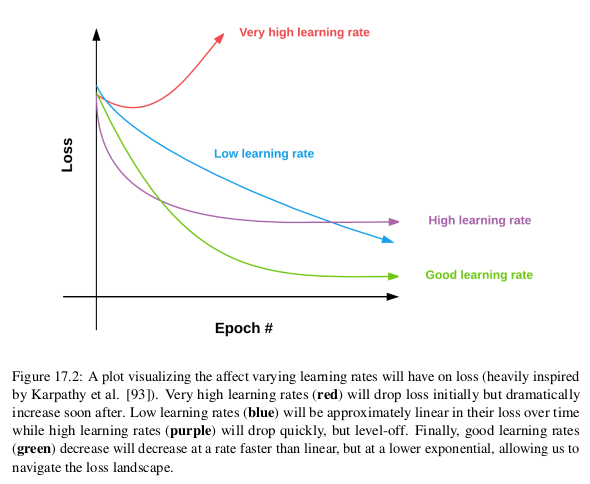
16.2 What if Validation Loss Is Lower than Training Loss?
Shouldn’t the training performance always be better than the validation or testing loss?
Not always. In fact, there are multiple reasons for this behavior:
- Your training data is seeing all the "hard" examples to classify, while your validation data consists of the "easy" data points.
- data augmentation.
- Your're not training "hard enough".
During the training process we randomly alter the training images by applying random transformations to them such as translation, rotation, resizing, and shearing. Because of these alterations, the network is constantly seeing augmented examples of the training data, which is a form of regularization, enabling the network to generalize better to the validation data while perhaps performing worse on the training set.
16.3 Summary
when you start to think there are signs of overfitting, don’t become too trigger happy to kill off the experiment. Let the network train for another 10-15 epochs to ensure your hunch is correct and that overfitting is occurring – we often need the context of these epochs to help us make this final decision.
17 Case Study: Breaking Captchas with a CNN
In the real-world, the struglle is often obtaining the (labeled) data itself. And in many instances, the labeled data is worth a lot more than the deep learning model obtained from training a network on your dataset.
18 Checkpointing Models
A good application of checkpoint is to serialize your network to disk each time there is an improvement during training. We define an improvement to be either a decrease in loss or an increase in accuracy.
How to monitor a given metric (e.x., validation loss, validation accuracy, etc.) during training and then save high performing networks to disk?
There are two methods to accomplish this inside Keras:
- Checkpoint incremental improvements.
- Checkpoint only the best model found during the process.
19 Visualizing Network Architectures
Architecture visualization: the process of constructing a graph of nodes and associated connections in a network.
Nodes in the graphs represent layers, while connnections between nodes represent the flow of data through the network.
These graphs typically include the following components for each layer:
- The input volume size.
- The output volume size.
- And optionally the name of the layer.
We typically use network architecture visualization when (1) debugging our own custom network architectures and (2) publication, where a visualization of the architecture is easier to understand than including the actual source code or trying to construct a table to convey the same information.
19.1 The Importance of Architecture Visualization
Visualizing the architecture of a model is a critical debugging tool, especially if you are:
- Implementing an architecture in a publication, but are unfamiliar with it.
- Implementing your own custom network architecture.
Whenever implementing a network architecture, I suggest you visualize the network architecture after every block of CONV and POOL layers, which will enable you to validate your assumptions (and more importantly, catch "bugs" in the network early on).
19.2 Installing graphviz and pydot
In order to construct a graph of our network and save it to disk using Keras, we need to install the graphviz prerequisite:
sudo apt install graphviz
Once graphviz library is installed, we need to install two Python packages:
pip install graphviz pydot-ng
19.3 Summary
When implementing my own network architectures, I validate that I’m on the right track by visualizing the architecture every 2-3 layer blocks as I’m actually coding the network – this action helps me find bugs or flaws in my logic early on.
20 Out-of-the-box CNNs for Classification
The Keras library ships with five CNNs that have been pre-trained on the ImageNet dataset:
- VGG16
- VGG19
- ResNet50
- Inception V3
- Xception
20.1 VGG
The VGG family of Convolutional Neural Networks can be characterized by two key components:
- All CONV layers using only 3 x 3 filters.
- Stacking muliple CONV -> RELU layers sets before applying a POOL operation.
There are two major drawbacks with VGG:
- It is painfully slow to train
- The network weights themselves are quite large. (500+MB)
20.2 ResNet
First introduced by He et al. in their 2015 paper, "Deep Residual Learning for Image Recognition", the ResNet architecture has become a seminal work in the deep learning literature, demonstrating that extremely deep networks can be trained using standard SGD (and a reasonable initialization function) through the use of residual modules.
Further accuracy can be obtained by updating the residual module to use identity mappings, as demonstrated in their 2016 follow-up publication, "Identity Mappings in Deep Residual Networks".
Keep in mind that the ResNet50 (as in 50 weight layers) implementation in the Keras core library is based on the former 2015 paper. Even though ResNet is much deeper than both VGG16 and VGG19, the model size is actually substantially smaller due to the use of global average pooling rather than fully-connected layers, which reduces the model size down to 100+MB for ResNet50.
20.3 Inception V3
The "Inception" module (and the resulting Inception architecture) was introduced by Szegedy et al. their 2014 paper, "Going Deeper with Convolutions". The goal of the inception module is to act as "multi-level feature extractor" by computing 1 × 1, 3 × 3, and 5 × 5 convolutions within the same module of the network – the output of these filters are then stacked along the channel dimension before being fed into the next layer in the network.
The original incarnation of this architecture was called GoogLeNet, but subsequent manifestations have simply been named Inception vN where N refers to the version number put out by Google. The Inception V3 architecture included in the Keras core comes from the later by publication by Szegedy et al., "Rethinking the Inception Architecture for Computer Vision". The weights for Inception V3 are smaller than both VGG and ResNet, coming in at 90+MB.
20.4 Xception
Xception was proposed by none other than François Chollet himself, the creator and chief maintainer of the Keras library, in his 2016 paper, "Xception: Deep Learning with Depthwise Separable Convolutions". Xception is an extension to the Inception architecture which replaces the standard Inception modules with depthwise separable convolutions. The Xception weights are the smallest of the pre-trained networks included in the Keras library, weighing in at 91MB.